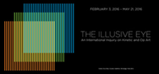
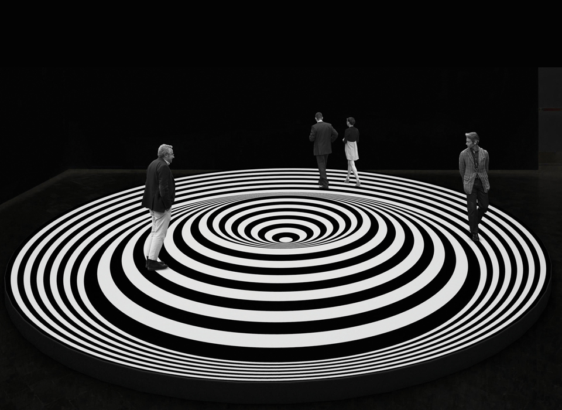

1230 5th Ave,
New York, NY 10029
02.03.16 — 05.21.16
The Illusive Eye
El Museo del Barrio is pleased
to present The Illusive Eye,

an international survey on
Kinetic and Op art.

The exhibition offers a broad
intellectual context for
Op art and geometric abstraction,
one that goes against the grain
of formalist art history.
The selection provides a special
focus on artwork from the Americas
and features major artists
from seventeen countries
in Latin America and beyond.
01.20.16 — 01.20.17
Joiri Minaya: Redecode